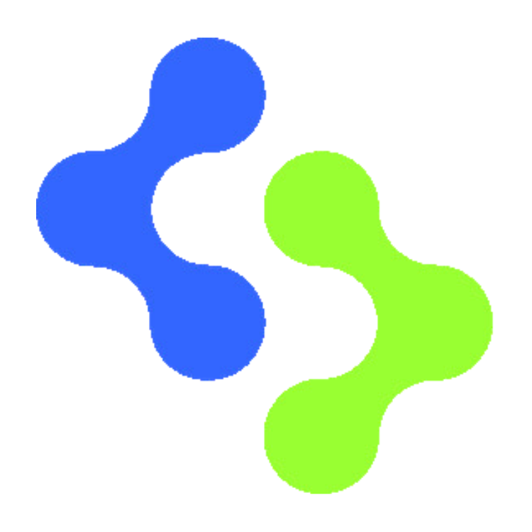

Instala OpenCode
Usaremos Desktop. Identifica el proveedor y el modelo antes de empezar. La terminal y el editor son otras interfaces disponibles.
Descarga oficial ↗
DeepSkillUn entorno de trabajo, datos reales y fuentes para construir con criterio.
La carpeta de práctica incluye el problema y los datos originales. El agente construye la solución contigo.
Usaremos Desktop. Identifica el proveedor y el modelo antes de empezar. La terminal y el editor son otras interfaces disponibles.
Descarga oficial ↗Descarga y descomprime el ZIP. Abre solar-starter en el agente y empieza por el brief.
Comprueba unidades, cobertura y cálculos. Cambia ciudad y potencia. Conserva el código y una tabla que puedas revisar.
Ver el resultado de referencia ↗NASA POWER, 2025. Lima, Arequipa y Piura: 365 registros diarios por ciudad. Incluye brief, respuestas originales y procedencia.
Snapshot real M4.5+ con magnitud, profundidad y ubicación. Preparado para construir un mapa y filtros.
Entiende los patrones, mejora la forma de trabajar y profundiza con ejercicios.
Workflows, decisiones y herramientas. Un texto de base de Anthropic; las interfaces actuales se consultan en sus docs.
Building effective agents ↗Contexto, entorno, ejecución y evidencia de verificación. Aplicar estos criterios al proyecto de clase.
Best practices for Claude Code ↗Conceptos de agentes y herramientas con el curso de Hugging Face. Para ampliar la práctica después de la sesión.
AI Agents Course ↗Cada recurso indica para qué consultarlo. Documentación y artículos de quienes construyen las herramientas.
Fuentes revisadas el 6 oct. 2026. Ver el registro completo ↗
La terminal tiene un plan gratuito. Los planes de IA añaden consumo incluido y condiciones para uso adicional.
Precios oficiales de Warp ↗USD · consulta del 6 oct. 2026. Build y Max permiten consumo adicional de pago. La facturación anual muestra un equivalente mensual con pago anual. Business y Enterprise están en la fuente oficial.
Para la clase puedes usar la terminal gratuita y trabajar con OpenCode. El coste del modelo depende del proveedor y del acceso que elijas.
Calcular el coste de una tarea ↗Permite mostrar la edición del curso como parte de la demo.